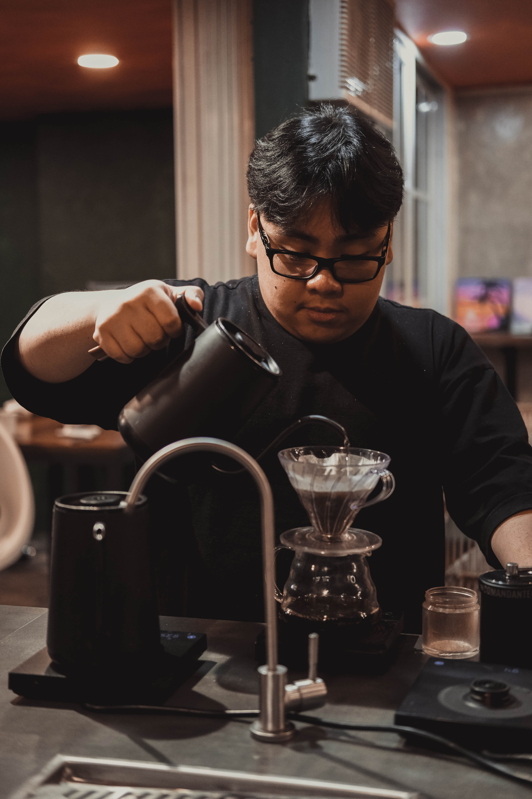

My Background
I spend most of my time tinkering with my Windows machine, playing video games, listening to music, and being on the internet.
I have experience in building computers, troubleshooting Windows, and setting up routers.
Core Competencies
- Languages: Java, C, and Python
- Tools: VMWare, VS Code, and Wireshark
- Concepts: Internet Safety, Networking, and Server Hosting
| Institution | Notable Accomplishments | Year |
|---|---|---|
| De La Salle University | pending... | 2023-Present |
| De La Salle University - Integrated School | Research on Computer-Supported Cooperative Work | 2021-2023 |
| St. Therese Educational Foundation of Tacloban Inc. | Division Festival of Talents for Math 2019 (1st Place) 61st Annual National Convention by Children's Museum Library Inc. (2nd Runner Up) |
2010-2020 |